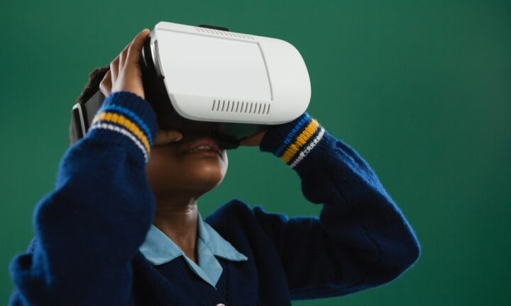

Effective use of virtual reality to improve student outcomes in Science
Dominique Russell Research inolving almost 200 secondary school students has shown that while the use of Immersive Virtual Reality (IVR) can increase student enjopyment in the learning task, when used on its own it may nto be the most effective tool for improving outcomes like declarative and preedural knowledge.
The study's findings are shared in a paper published in the Journal of Educational Psychology, authored by Guido Makransky, Niels K Andreasen and Sarune Baceviciute from the University of Copenhagen and Richard E Mayer, from the University of California, Santa Barbra.
Journal of Educational Psychology
'We conducted the study because there was existing evidence that IVR simulations lead to better learning outcomes specifically when students have the opportunity to reflect over the content,' lead author Guido Makransky, tells Teacher.
| Date | Milestone |
|---|---|
| 1965 | First prototype at MIT |
| 1968 | AGC Tested at NASA |